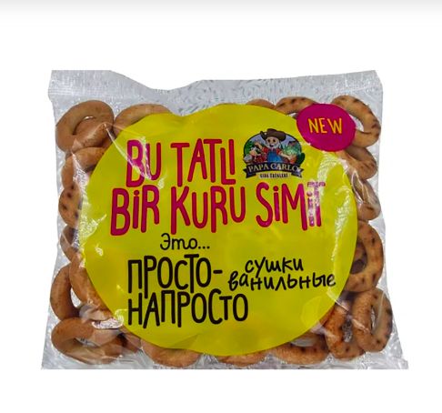

Перевели смысл, не слово
Адаптировали категорию и формулировку так, чтобы продукт был понятен без знания русской культуры.
Вывод российского продукта на новый рынок: позиционирование, упаковка, коммуникация, байеры, инфлюенсеры и первые полки.
Российские «сушки» не имели в Турции готовой категории и понятного сценария потребления.
Нужно было не объяснить слово. Нужно было создать желание попробовать.

OZBI — российский продуктовый бренд компании Good Food Russia / Diva Export. На домашнем рынке продукт был знаком покупателю, но в Турции у него не было ни готовой категории, ни понятного сценария потребления.
Представить продукт новой аудитории и подготовить понятную коммуникацию для выхода на рынок и взаимодействия с ритейлом.
2023–2024 · завершённый проект
Market entry · food retail · Турция
Для турецкого покупателя продукт был незнаком: название не вызывало ассоциаций, упаковка не объясняла вкус, а привычного места на полке не существовало.
Мы переформулировали продукт как ароматные мини-бублики с ванильным вкусом, проверили реакцию аудитории, подготовили материалы для турецкого рынка и собрали путь от первого знакомства до переговоров с ритейлом.
Выход на рынок начинается не с перевода. Он начинается с вопроса: «зачем это человеку здесь?»Решение Digital Clever
Адаптировали категорию и формулировку так, чтобы продукт был понятен без знания русской культуры.
Использовали фокус-группы, тестировали вкус, упаковку и сценарии потребления до масштабирования.
Собрали турецкие материалы, коммуникацию и аргументы для переговоров с байерами.
Инфлюенсеры, дегустации и понятный контент дали людям повод попробовать продукт прямо сейчас.

Сильный market entry соединяет исследование, упаковку, коммуникацию и продажи в одну последовательность.
От старта работы до выхода в турецкий ритейл.
Подготовили продукт и коммуникацию для переговоров с байерами.
После influencer-кампании ритейлеры сами запросили продукт.
Не предполагаем, что рынок прочитает продукт так же, как его читают дома.
Упаковка и контент должны ответить на вопрос «что это и зачем мне».
Маркетинг помогает не только получить охват, но и открыть дверь в ритейл.
Расскажите, что вы выводите на рынок. В течение 24 часов отправим предварительное предложение по стратегии входа и продвижения.
Обсудить проектРасскажите о бизнесе и цели. Ответим в течение 24 часов.